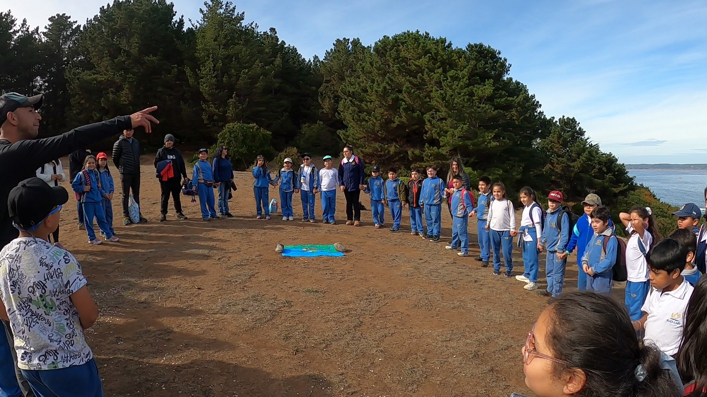

Galería
Ciencia y educación en terreno.
Estudios, monitoreos, talleres y experiencias de conexión con la naturaleza.
Nuestro trabajo
Una mirada a cada ambiente.
Explora registros de trabajo profesional, observación de especies y actividades educativas desarrolladas junto a comunidades.
Próximo proyecto
Llevemos el trabajo al territorio.
Conversemos sobre la experiencia técnica o educativa que necesitas desarrollar.